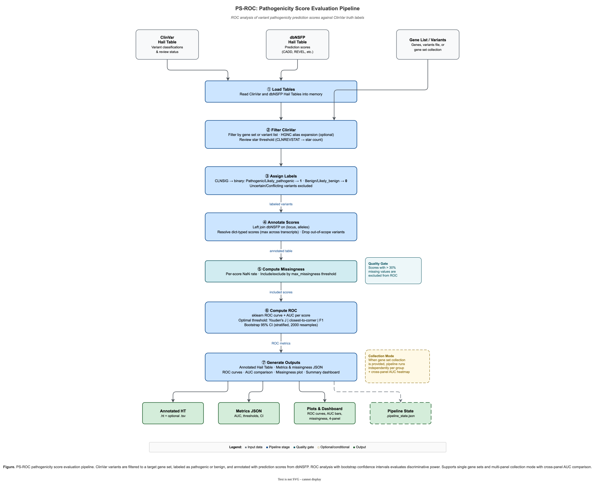

PSROC: Prediction Score ROC Analysis¶
PSROC is a module within hvantk that evaluates variant pathogenicity prediction scores using ROC (Receiver Operating Characteristic) curve analysis. It compares prediction scores from databases like dbNSFP against ClinVar truth labels to assess their discriminative power.

Figure 1. PS-ROC pipeline — from ClinVar/dbNSFP table loading through label assignment, score annotation, missingness filtering, ROC computation, and output generation.
Overview¶
The PSROC module provides an end-to-end pipeline for benchmarking variant pathogenicity prediction scores:
Primary Functionality¶
- ROC Analysis - Compute AUC, optimal thresholds, and sensitivity/specificity for each score
- Missingness Handling - Track and filter scores based on missing value rates
- Visualization - Generate publication-quality ROC curves and comparison plots
- Pipeline Orchestration - Single command runs the complete analysis workflow
Key Features¶
- Multi-Score Comparison - Evaluate multiple prediction scores simultaneously
- Configurable Thresholds - Youden's J, closest-to-corner, and F1 optimization methods
- Automatic Filtering - Exclude scores with excessive missing values
- Flexible Input - Filter by genes, gene lists, or specific variants
- Comprehensive Outputs - JSON metrics, TSV exports, and visualization plots
Quick Start¶
Command-Line Interface¶
# Basic usage with specific genes
hvantk psroc \
--genes BRCA1,BRCA2 \
--clinvar-ht /data/clinvar_grch38.ht \
--dbnsfp-ht /data/dbnsfp_grch38.ht \
--scores "CADD_phred,REVEL_score,MetaLR_score" \
--output-dir /results/brca_psroc
# View execution plan without running
hvantk psroc \
--genes BRCA1 \
--clinvar-ht /data/clinvar.ht \
--dbnsfp-ht /data/dbnsfp.ht \
--scores "CADD_phred" \
--output-dir /results \
--dry-run
Python API¶
from hvantk.algorithms.psroc import PSROCConfig, PSROCPipeline
# Configure analysis
config = PSROCConfig(
genes=["BRCA1", "BRCA2"],
clinvar_ht="/data/clinvar_grch38.ht",
dbnsfp_ht="/data/dbnsfp_grch38.ht",
scores=["CADD_phred", "REVEL_score", "MetaLR_score"],
output_dir="/results/brca_psroc",
max_missingness=0.3,
)
# Run pipeline
pipeline = PSROCPipeline(config)
result = pipeline.run()
# View results
print(result.summary())
for score_name, roc in result.metrics.items():
print(f"{score_name}: AUC={roc.auc:.3f}")
Example with Synthetic Data¶
The PSROC module includes synthetic test data for learning and testing. This data allows you to run the complete pipeline without needing real ClinVar or dbNSFP tables.
Running the Example¶
# Run the example script (builds Hail Tables from synthetic TSVs and runs full pipeline)
python examples/psroc/run_psroc_example.py --output-dir /tmp/psroc_example
Synthetic Dataset Characteristics¶
The synthetic dataset contains:
| Component | Description |
|---|---|
| Variants | 100 variants across BRCA1, BRCA2, and TP53 |
| Labels | 50 pathogenic, 40 benign, 10 VUS (excluded) |
| Scores | 4 prediction scores with varying performance |
Expected Results¶
The synthetic scores are designed to demonstrate different discriminative capabilities:
| Score | Expected AUC | Missingness | Status |
|---|---|---|---|
| REVEL_score | ~0.95 | ~2% | Included |
| CADD_phred | ~0.90 | ~5% | Included |
| MetaLR_score | ~0.75 | ~10% | Included |
| VEST4_score | N/A | ~40% | Excluded |
The VEST4_score is intentionally designed with high missingness to demonstrate the automatic score exclusion feature when missingness exceeds the threshold.
Test Data Files¶
Located in hvantk/tests/testdata/psroc/:
synthetic_clinvar.tsv- ClinVar-like variant annotationssynthetic_dbnsfp.tsv- dbNSFP-like prediction scorestest_genes.txt- Gene list for--genes-filetestingtest_variants.txt- Variant list for--variantstesting
Detailed Usage¶
Input Sources¶
PSROC requires exactly one input source to select variants for analysis:
Option 1: Gene Symbols¶
# Comma-separated gene symbols
hvantk psroc --genes BRCA1,BRCA2,TP53 ...
# From a file (one gene per line)
hvantk psroc --genes-file /data/cardiac_genes.txt ...
Option 2: Variant List¶
# Variant file format: chr:pos:ref:alt (one per line)
hvantk psroc --variants /data/my_variants.txt ...
Example variant file:
Option 3: Named Gene Set Collection (Multi-Group Analysis)¶
Run PSROC independently for each named gene set in a collection. Each group gets its own output subdirectory with per-group metrics and plots.
# From a JSON gene set collection
hvantk psroc --gene-sets /data/disease_gene_sets.json ...
# From a GMT file (e.g., MSigDB pathways)
hvantk psroc --gene-sets /data/pathways.gmt ...
Gene set collections can be prepared from various sources using hvantk's streamer layer. See Preparing Gene Set Collections and the CLI commands below:
# Prepare gene sets from ClinGen
hvantk genesets clingen --ht /data/clingen.ht --group-by gcep -o gene_sets.json
# From COSMIC Cancer Gene Census
hvantk genesets cosmic --ht /data/cosmic_cgc.ht -o cosmic_gene_sets.json
# Or from custom panels
hvantk genesets prepare -i panels.tsv -o panels.json --hgnc /data/hgnc.ht
Required Tables¶
PSROC requires pre-built Hail Tables for ClinVar and dbNSFP:
# Build ClinVar table (clinvar plugin has a built-in downloader; raw-dir
# holds clinvar.vcf.gz + .tbi).
hvantk reprocess clinvar:variants \
--raw-dir /data/clinvar/ \
--output /data/clinvar_grch38.ht
# Build dbNSFP table from the concatenated BGZF (see Deployment Guide).
# dbNSFP has no plugin downloader; --skip-download is required.
hvantk reprocess dbnsfp:variants \
--raw-dir /data/dbnsfp/ \
--output /data/dbnsfp_grch38.ht \
--skip-download
Score Selection¶
Specify dbNSFP score fields to evaluate:
dbNSFP Score Reference¶
The table below lists commonly used prediction scores available in dbNSFP 4.x. Field names are case-sensitive and must match the dbNSFP column names exactly.
Important: PSROC assumes higher score = more pathogenic. Scores marked with inverted directionality (lower = pathogenic) will produce AUC < 0.5 and should not be used directly. Use
_rankscorevariants instead (see note below).
Ensemble / meta-predictor scores (recommended — combine multiple signals):
| Field name | Description | Range | Direction |
|---|---|---|---|
REVEL_score |
Rare Exome Variant Ensemble Learner | 0–1 | Higher = pathogenic |
MetaLR_score |
Meta-analytic logistic regression | 0–1 | Higher = pathogenic |
MetaSVM_score |
Meta-analytic support vector machine | unbounded | Higher = pathogenic |
MetaRNN_score |
Meta-analytic recurrent neural network | 0–1 | Higher = pathogenic |
ClinPred_score |
Clinical pathogenicity prediction | 0–1 | Higher = pathogenic |
BayesDel_addAF_score |
BayesDel with allele frequency features | -1 to 1 | Higher = pathogenic |
BayesDel_noAF_score |
BayesDel without allele frequency | -1 to 1 | Higher = pathogenic |
CADD_phred |
CADD Phred-scaled C-score | 0–60+ | Higher = pathogenic |
Individual predictor scores (higher = pathogenic):
| Field name | Description | Range | Direction |
|---|---|---|---|
VEST4_score |
Variant Effect Scoring Tool v4 | 0–1 | Higher = pathogenic |
MVP_score |
Missense Variant Pathogenicity | 0–1 | Higher = pathogenic |
gMVP_score |
Generalized MVP | 0–1 | Higher = pathogenic |
MPC_score |
Missense badness, PolyPhen-2, Constraint | 0–5 | Higher = pathogenic |
PrimateAI_score |
Primate AI deep learning | 0–1 | Higher = pathogenic |
DEOGEN2_score |
DEOGEN2 pathogenicity prediction | 0–1 | Higher = pathogenic |
DANN_score |
Deep Annotation Neural Network | 0–1 | Higher = pathogenic |
M-CAP_score |
Mendelian Clinically Applicable Pathogenicity | 0–1 | Higher = pathogenic |
LIST-S2_score |
LIST variant-specific score | 0–1 | Higher = pathogenic |
AlphaMissense_score |
AlphaMissense deep learning | 0–1 | Higher = pathogenic |
EVE_score |
Evolutionary model of Variant Effect | 0–1 | Higher = pathogenic |
VARITY_R_score |
VARITY regular | 0–1 | Higher = pathogenic |
VARITY_ER_score |
VARITY extended regular | 0–1 | Higher = pathogenic |
Polyphen2_HDIV_score |
PolyPhen-2 HumDiv | 0–1 | Higher = pathogenic |
Polyphen2_HVAR_score |
PolyPhen-2 HumVar | 0–1 | Higher = pathogenic |
MutationAssessor_score |
Mutation Assessor functional impact | -5.5 to 6.5 | Higher = pathogenic |
Scores with inverted directionality (do NOT use directly with PSROC):
| Field name | Description | Range | Direction |
|---|---|---|---|
SIFT_score |
Sorting Intolerant From Tolerant | 0–1 | Lower = pathogenic |
PROVEAN_score |
Protein Variation Effect Analyzer | unbounded | More negative = pathogenic |
FATHMM_score |
Functional Analysis Through HMMs | unbounded | More negative = pathogenic |
LRT_score |
Likelihood Ratio Test | 0–1 | Lower = pathogenic |
Tip — using
_rankscorevariants: dbNSFP provides normalized rank scores (e.g.,SIFT_converted_rankscore,FATHMM_converted_rankscore) where higher = more damaging for all scores. These work directly with PSROC and are a good alternative when you want to include scores with inverted directionality.Rank scores are valid for ROC analysis: AUC values and score comparisons are correct because the monotonic ranking is preserved. However, the optimal threshold reported by PSROC will be in rank space (e.g., 0.85) rather than the original score units (e.g., SIFT 0.05). This means rank-score thresholds are useful for benchmarking which scores discriminate best, but cannot be used directly as clinical cutoffs in the native score scale.
Conservation scores (measure evolutionary constraint, not variant-specific):
| Field name | Description | Range | Direction |
|---|---|---|---|
GERP++_RS |
GERP rejected substitutions | -12 to 6.2 | Higher = conserved |
phyloP100way_vertebrate |
phyloP 100-way vertebrate | -20 to 11.2 | Higher = conserved |
phastCons100way_vertebrate |
phastCons 100-way vertebrate | 0–1 | Higher = conserved |
The exact set of available scores depends on the dbNSFP version used to build the Hail Table. To list all score fields in your table, run:
import hail as hl
ht = hl.read_table('/path/to/dbnsfp.ht')
score_fields = sorted(f for f in ht.row if f.endswith('_score') or f.endswith('_phred'))
print(score_fields)
Missingness Handling¶
Scores with high rates of missing values can bias ROC analysis. PSROC automatically:
- Computes missingness statistics for each score
- Excludes scores exceeding the threshold from ROC analysis
- Reports all missingness statistics in the output
# Default: exclude scores with >30% missing values
hvantk psroc ... --max-missingness 0.3
# Stricter threshold for high-quality analysis
hvantk psroc ... --max-missingness 0.1
# Relaxed threshold for exploratory analysis
hvantk psroc ... --max-missingness 0.5
ClinVar Review Status Filtering¶
Filter variants by ClinVar review status (star rating):
# Require at least 1 star (default)
hvantk psroc ... --min-stars 1
# Require expert panel review (3+ stars)
hvantk psroc ... --min-stars 3
Star ratings: - 0 stars: No assertion criteria provided - 1 star: Single submitter with criteria - 2 stars: Multiple submitters, no conflicts - 3 stars: Reviewed by expert panel - 4 stars: Practice guideline
Threshold Optimization Methods¶
PSROC supports three methods for finding optimal classification thresholds:
# Youden's J statistic (default) - maximizes (sensitivity + specificity - 1)
hvantk psroc ... --threshold-method youden
# Closest to corner - minimizes distance to perfect classifier (0,1)
hvantk psroc ... --threshold-method closest_to_corner
# F1 score approximation
hvantk psroc ... --threshold-method f1
Pipeline Stages¶
The PSROC pipeline executes seven stages:
| Stage | Description |
|---|---|
| 1. Load Tables | Read ClinVar and dbNSFP Hail Tables |
| 2. Filter ClinVar | Filter to target genes or variants |
| 3. Assign Labels | Convert CLNSIG to binary P/B labels |
| 4. Annotate Scores | Join with dbNSFP prediction scores |
| 5. Compute Missingness | Calculate per-score missingness statistics |
| 6. Compute ROC | Compute ROC metrics for qualifying scores |
| 7. Generate Outputs | Create plots, metrics JSON, and reports |
Label Assignment¶
ClinVar clinical significance values are mapped to binary labels:
Pathogenic (label=1): - Pathogenic - Likely_pathogenic - Pathogenic/Likely_pathogenic
Benign (label=0): - Benign - Likely_benign - Benign/Likely_benign
Excluded: - Uncertain_significance - Conflicting_interpretations_of_pathogenicity - All other values
Output Files¶
PSROC generates the following outputs:
output_dir/
├── psroc_metrics.json # ROC metrics (AUC, thresholds, etc.)
├── psroc_missingness.json # Per-score missingness statistics
├── psroc_annotated.ht/ # Hail Table with labels and scores
├── psroc_annotated.tsv # TSV export (if --export-tsv)
├── plots/
│ ├── psroc_roc_curves.png # Multi-score ROC overlay
│ ├── psroc_auc_comparison.png # AUC bar chart
│ ├── psroc_missingness.png # Missingness summary
│ └── psroc_dashboard.png # Summary dashboard
├── logs/
│ └── psroc_*.log # Execution log
└── .pipeline_state.json # State for recovery
Metrics JSON Format¶
{
"total_variants": 1250,
"n_pathogenic": 620,
"n_benign": 580,
"n_excluded": 50,
"scores_included": ["CADD_phred", "REVEL_score"],
"scores_excluded": ["MetaLR_score"],
"max_missingness_threshold": 0.3,
"metrics": {
"CADD_phred": {
"score_name": "CADD_phred",
"auc": 0.892,
"optimal_threshold": 22.5,
"sensitivity_at_optimal": 0.85,
"specificity_at_optimal": 0.82,
"n_variants_used": 1180,
"missingness": {
"n_total": 1200,
"n_present": 1180,
"n_missing": 20,
"missingness_rate": 0.017,
"included_in_analysis": true
}
}
}
}
Missingness Report Format¶
{
"total_variants": 1200,
"max_missingness_threshold": 0.3,
"scores_included": ["CADD_phred", "REVEL_score"],
"scores_excluded": ["MetaLR_score"],
"scores": {
"CADD_phred": {
"n_total": 1200,
"n_present": 1180,
"n_missing": 20,
"missingness_rate": 0.017,
"included_in_analysis": true,
"exclusion_reason": null
},
"MetaLR_score": {
"n_total": 1200,
"n_present": 720,
"n_missing": 480,
"missingness_rate": 0.4,
"included_in_analysis": false,
"exclusion_reason": "missingness_rate (0.40) exceeds max_missingness (0.30)"
}
}
}
CLI Reference¶
Command Options¶
hvantk psroc [OPTIONS]
Input Sources (exactly one required):
--genes TEXT Comma-separated gene symbols
--genes-file PATH File with gene symbols (one per line)
--variants PATH Variant list (chr:pos:ref:alt format)
--gene-sets PATH Gene set collection (JSON/GMT) for multi-group analysis
Required:
--clinvar-ht PATH Path to ClinVar Hail Table
--dbnsfp-ht PATH Path to dbNSFP Hail Table
--scores TEXT Comma-separated score field names
-o, --output-dir PATH Output directory
Optional:
--reference-genome GRCh37 or GRCh38 [default: GRCh38]
--min-stars INTEGER Minimum ClinVar stars [default: 1]
--max-missingness FLOAT Max missingness rate [default: 0.3]
--threshold-method youden|closest_to_corner|f1 [default: youden]
--output-prefix TEXT Output filename prefix [default: psroc]
--export-tsv Export annotated variants as TSV
--no-plots Skip plot generation
--overwrite Overwrite existing files
--dry-run Show plan without running
--log-level DEBUG|INFO|WARNING|ERROR [default: INFO]
Examples¶
# Evaluate scores for BRCA genes with stricter criteria
hvantk psroc \
--genes BRCA1,BRCA2 \
--clinvar-ht /data/clinvar.ht \
--dbnsfp-ht /data/dbnsfp.ht \
--scores "CADD_phred,REVEL_score,MetaLR_score" \
--output-dir /results/brca \
--min-stars 2 \
--max-missingness 0.1
# Use genes from file with TSV export
hvantk psroc \
--genes-file /data/cardiac_genes.txt \
--clinvar-ht /data/clinvar.ht \
--dbnsfp-ht /data/dbnsfp.ht \
--scores "REVEL_score,ClinPred_score" \
--output-dir /results/cardiac \
--export-tsv
# Analyze specific variants
hvantk psroc \
--variants /data/candidate_variants.txt \
--clinvar-ht /data/clinvar.ht \
--dbnsfp-ht /data/dbnsfp.ht \
--scores "CADD_phred,DANN_score,PrimateAI_score" \
--output-dir /results/candidates
# Exploratory analysis with relaxed missingness
hvantk psroc \
--genes TP53 \
--clinvar-ht /data/clinvar.ht \
--dbnsfp-ht /data/dbnsfp.ht \
--scores "CADD_phred,REVEL_score,VEST4_score" \
--output-dir /results/tp53 \
--max-missingness 0.5 \
--no-plots
Python API Reference¶
Core Classes¶
PSROCConfig¶
Configuration dataclass for the pipeline:
from hvantk.algorithms.psroc import PSROCConfig
config = PSROCConfig(
# Input sources (exactly one required)
genes=["BRCA1", "BRCA2"], # Gene symbols
genes_file=None, # Path to gene file
variants_path=None, # Path to variant file
gene_set_collection=None, # Dict[str, Set[str]] for multi-group
# Required paths
clinvar_ht="/data/clinvar.ht",
dbnsfp_ht="/data/dbnsfp.ht",
# Score configuration
scores=["CADD_phred", "REVEL_score"],
# Output
output_dir="/results/psroc",
output_prefix="psroc",
# Processing options
reference_genome="GRCh38",
min_stars=1,
max_missingness=0.3,
threshold_method="youden",
# Output options
export_tsv=False,
overwrite=False,
generate_plots=True,
)
# Validate configuration
errors = config.validate()
if errors:
for e in errors:
print(f"Error: {e}")
PSROCPipeline¶
Main pipeline orchestrator:
from hvantk.algorithms.psroc import PSROCPipeline
pipeline = PSROCPipeline(config)
# Preview execution plan
pipeline.show_plan()
# Run single gene set pipeline
result = pipeline.run()
# --- Multi-group analysis ---
from hvantk.algorithms.psroc import PSROCConfig, PSROCPipeline
collection_config = PSROCConfig(
gene_set_collection={
"cardiac": {"MYH7", "TNNT2", "LMNA"},
"neuro": {"SCN1A", "SCN2A", "KCNQ2"},
},
clinvar_ht="/data/clinvar.ht",
dbnsfp_ht="/data/dbnsfp.ht",
scores=["CADD_phred", "REVEL_score"],
output_dir="/results/multi_group",
)
pipeline = PSROCPipeline(collection_config)
results = pipeline.run_collection() # Dict[str, PSROCResult]
for group_name, result in results.items():
print(f"{group_name}: {result.n_total} variants")
for name, roc in result.metrics.items():
print(f" {name}: AUC={roc.auc:.3f}")
PSROCResult¶
Results from pipeline execution:
# Access results
print(f"Variants: {result.n_total}")
print(f"Pathogenic: {result.n_pathogenic}")
print(f"Benign: {result.n_benign}")
print(f"Excluded: {result.n_excluded}")
# ROC metrics (only for included scores)
for name, roc in result.metrics.items():
print(f"{name}: AUC={roc.auc:.3f}, threshold={roc.optimal_threshold:.3f}")
# Missingness stats (all scores)
for name, miss in result.missingness.items():
status = "included" if miss.included_in_analysis else "EXCLUDED"
print(f"{name}: {miss.missingness_rate:.1%} missing [{status}]")
# Generate summary
print(result.summary())
# Serialize to dict
result_dict = result.to_dict()
ROC Analysis Functions¶
For direct use without the pipeline:
from hvantk.algorithms.psroc import (
compute_roc_metrics,
compute_all_missingness,
filter_scores_by_missingness,
)
import numpy as np
# Prepare data
labels = np.array([0, 0, 0, 1, 1, 1]) # 0=benign, 1=pathogenic
scores = {
"CADD_phred": np.array([10, 12, 15, 25, 28, 30]),
"REVEL_score": np.array([0.1, 0.2, 0.3, 0.7, 0.8, 0.9]),
}
# Compute ROC metrics
results = compute_roc_metrics(
labels=labels,
scores=scores,
max_missingness=0.3,
threshold_method="youden",
)
for name, roc in results.items():
print(f"{name}: AUC={roc.auc:.3f}")
Plotting Functions¶
from hvantk.algorithms.psroc import (
plot_roc_curves,
plot_auc_comparison,
plot_missingness_summary,
plot_psroc_summary_dashboard,
)
# Multi-score ROC overlay
fig = plot_roc_curves(
result.metrics,
output_path="roc_curves.png",
title="Pathogenicity Score Comparison",
show_optimal=True,
)
# AUC bar chart comparison
fig = plot_auc_comparison(
result.metrics,
output_path="auc_comparison.png",
horizontal=True,
)
# Missingness summary
fig = plot_missingness_summary(
result.missingness,
output_path="missingness.png",
max_missingness_threshold=0.3,
)
# Summary dashboard
fig = plot_psroc_summary_dashboard(
result.metrics,
result.missingness,
output_path="dashboard.png",
max_missingness_threshold=0.3,
)
End-to-End Deployment Guide¶
This section walks through running the full PSROC pipeline on a fresh host, from installation through results.
Prerequisites¶
| Requirement | Version | Notes |
|---|---|---|
| Python | >= 3.10 | |
| Java | 8 or 11 | Required by Hail/Spark |
| HTSlib / bgzip | >= 1.10 | Required for BGZF compression in Step 2 |
| Disk space | ~50 GB | dbNSFP (~45 GB) + intermediate tables |
Verify Java is available:
Step 1: Install hvantk¶
pip install hvantk
# or from source:
git clone https://github.com/bigbio/hvantk
cd hvantk && poetry install
Step 2: Download Data (Layer 1 — Downloaders)¶
ClinVar (automated):
dbNSFP (manual — ~45 GB, license-gated):
- Visit https://sites.google.com/site/jpaboreno/dbNSFP
- Download the
dbNSFP4.xarchive and extract the per-chromosome.gzfiles - Concatenate into a single BGZF file (the builder expects one file):
ClinGen (automated, for gene set extraction):
hvantk download clingen --output-dir /data/clingen
# Downloads Clingen-Gene-Disease-Summary-<YYYY-MM-DD>.csv
Step 3: Build Hail Tables (Layer 1 — Builders)¶
# Build ClinVar table from the already-downloaded VCF in /data/clinvar/.
# Note: ClinVar distributes standard gzip (.vcf.gz), which Hail reads
# single-threaded. For parallel reads, recompress as BGZF first:
# hvantk utils convert-bgz /data/clinvar/clinvar.vcf.gz
hvantk reprocess clinvar:variants \
--raw-dir /data/clinvar/ \
--output /data/tables/clinvar_grch38.ht \
--skip-download
# Build dbNSFP table from the concatenated BGZF file prepared in Step 2.
hvantk reprocess dbnsfp:variants \
--raw-dir /data/dbnsfp/ \
--output /data/tables/dbnsfp_grch38.ht \
--skip-download
# Build ClinGen table (for gene set extraction). raw-dir contains the
# Clingen-Gene-Disease-Summary-<YYYY-MM-DD>.csv downloaded in Step 2.
hvantk reprocess clingen:gene-disease \
--raw-dir /data/clingen/ \
--output /data/tables/clingen.ht \
--skip-download
Step 4: Prepare Gene Sets¶
Extract named gene set collections from ClinGen or other sources. See Preparing Gene Set Collections below.
# GCEP-based gene sets (recommended — broader, biologically coherent panels)
hvantk genesets clingen \
--ht /data/tables/clingen.ht \
--group-by gcep \
--min-classification Moderate \
--min-genes 20 \
-o /data/gene_sets/clingen_gcep.json
# Or keyword-based disease categories
hvantk genesets clingen \
--ht /data/tables/clingen.ht \
--group-by keyword \
--categories-json /data/my_categories.json \
-o /data/gene_sets/clingen_keywords.json
Step 5: Run PSROC (Layer 3 — Pipeline)¶
# Single gene set
hvantk psroc \
--genes BRCA1,BRCA2,TP53 \
--clinvar-ht /data/tables/clinvar_grch38.ht \
--dbnsfp-ht /data/tables/dbnsfp_grch38.ht \
--scores "CADD_phred,REVEL_score,MetaLR_score,VEST4_score,AlphaMissense_score" \
--output-dir /results/psroc \
--min-stars 1
# Multi-group analysis with gene set collection
hvantk psroc \
--gene-sets /data/gene_sets/disease_categories.json \
--clinvar-ht /data/tables/clinvar_grch38.ht \
--dbnsfp-ht /data/tables/dbnsfp_grch38.ht \
--scores "CADD_phred,REVEL_score,MetaLR_score,AlphaMissense_score" \
--output-dir /results/psroc_multi
Step 6: Review Results¶
/results/psroc_multi/
├── cardiac/
│ ├── psroc_cardiac_metrics.json
│ ├── plots/
│ │ ├── psroc_cardiac_roc_curves.png
│ │ └── psroc_cardiac_dashboard.png
│ └── ...
├── neurological/
│ └── ...
└── ...
Preparing Gene Set Collections¶
Gene set collections are Dict[str, Set[str]] mappings from a group name to
a set of gene symbols. They can be loaded from JSON or GMT files.
From Custom Gene Panels¶
If you have gene panels as text files or spreadsheet exports, use
hvantk genesets prepare to convert them:
- Format your panels as a headerless two-column TSV
(gene_set_name
gene_symbol), one gene per line:
- Convert to gene set JSON:
# Basic conversion
hvantk genesets prepare -i panels.tsv -o panels.json
# With HGNC validation (recommended)
hvantk genesets prepare -i panels.tsv -o panels.json --hgnc /data/hgnc.ht
- Run PSROC:
hvantk psroc --gene-sets panels.json \
--clinvar-ht /data/clinvar.ht \
--dbnsfp-ht /data/dbnsfp.ht \
--scores "CADD_phred,REVEL_score" \
-o /results/psroc
Gene identifier requirements:
- Use HGNC-approved human gene symbols (e.g., BRCA1, TP53, SCN1A).
- Ensembl IDs, mouse symbols, and Entrez IDs are not accepted.
- Use --hgnc to automatically resolve outdated aliases (e.g., FANCD1 → BRCA2).
From ClinGen (CLI)¶
The hvantk genesets clingen command extracts gene sets from ClinGen data:
# GCEP-based gene sets (recommended — broader panels, 20-300 genes each)
hvantk genesets clingen \
--ht /data/tables/clingen.ht \
--group-by gcep \
--min-classification Moderate \
--min-genes 20 \
-o /data/gene_sets/clingen_gcep.json
# Keyword-based disease categories
hvantk genesets clingen \
--ht /data/tables/clingen.ht \
--group-by keyword \
--categories-json /data/my_categories.json \
-o /data/gene_sets/clingen_keywords.json
# Disease-level grouping (fine-grained — most have 1-3 genes)
hvantk genesets clingen \
--ht /data/tables/clingen.ht \
--group-by disease \
--min-genes 5 \
-o /data/gene_sets/clingen_diseases.json
From ClinGen (Python API)¶
from hvantk.skills.clingen.streamers import ClinGenGeneDiseaseTableStreamer
streamer = ClinGenGeneDiseaseTableStreamer(table_path="/data/tables/clingen.ht")
streamer.setup()
# GCEP-based (recommended)
gene_sets = streamer.get_geneset_per_gcep(
min_classification="Moderate", min_genes=20
)
# Keyword-based
gene_sets = streamer.aggregate_by_disease_category({
"cardiac": ["cardiomyopathy", "arrhythmia", "long_qt"],
"neurological": ["epilepsy", "neuropathy", "ataxia"],
"cancer": ["cancer", "tumor", "neoplasm"],
})
# MONDO ontology-based
result = streamer.categorize_by_ontology(ontology="/data/mondo.obo")
gene_sets = {
cat: data["genes"] for cat, data in result.items()
}
From GMT Files¶
Standard GMT files (e.g., MSigDB pathways) can be loaded directly:
from hvantk.core.utils.gene_sets import load_gene_sets
collection = load_gene_sets("/data/pathways.gmt")
gene_set_dict = {gs.name: gs.genes for gs in collection}
Saving for CLI Use¶
from hvantk.core.utils.gene_sets import load_gene_sets_from_dict
collection = load_gene_sets_from_dict(gene_sets)
collection.save("/data/gene_sets/my_collection.json")
# Then: hvantk psroc --gene-sets /data/gene_sets/my_collection.json ...
Interpreting Results¶
AUC Values¶
The Area Under the ROC Curve (AUC) ranges from 0 to 1:
| AUC Range | Interpretation |
|---|---|
| 0.9 - 1.0 | Excellent discrimination |
| 0.8 - 0.9 | Good discrimination |
| 0.7 - 0.8 | Acceptable discrimination |
| 0.6 - 0.7 | Poor discrimination |
| 0.5 - 0.6 | Near random (uninformative) |
| < 0.5 | Worse than random (inverse predictor) |
Optimal Threshold¶
The optimal threshold represents the score value that best separates pathogenic from benign variants. Use this value for binary classification:
# Classify new variants
threshold = result.metrics["CADD_phred"].optimal_threshold
prediction = "pathogenic" if score >= threshold else "benign"
Sensitivity vs Specificity Trade-off¶
- Sensitivity (True Positive Rate): Proportion of pathogenic variants correctly identified
- Specificity (True Negative Rate): Proportion of benign variants correctly identified
Choose your operating point based on clinical context: - High sensitivity: For screening (minimize false negatives) - High specificity: For confirmatory testing (minimize false positives)
Best Practices¶
Data Quality¶
- Use sufficient sample size: At least 30 variants per class for reliable AUC estimates
- Filter by review status: Use
--min-stars 2for higher-confidence labels - Check class balance: Large imbalances may bias results
Score Selection¶
- Start broad: Include multiple scores to identify best performers
- Check missingness: Scores with high missingness may be unreliable
- Consider ensembles: Combine top performers for better predictions
Threshold Selection¶
- Match clinical context: Choose threshold method based on use case
- Validate externally: Test thresholds on independent datasets
- Report confidence: Include variant counts and confidence intervals
Troubleshooting¶
Common Issues¶
Issue: "All scores were excluded due to high missingness"
Solution: Increase --max-missingness threshold or use scores with better coverage:
hvantk psroc ... --max-missingness 0.5
Issue: "Need both pathogenic and benign variants"
Solution: Expand gene list or use variant file with both classes:
hvantk psroc --genes-file larger_gene_list.txt ...
Issue: "Low pathogenic/benign count may affect ROC reliability"
Solution: This is a warning. Consider:
1. Adding more genes to increase variant count
2. Relaxing ClinVar review status filter (--min-stars 0)
3. Interpreting results with caution
Issue: "Score not found in dbNSFP table"
Solution: Check score field names match dbNSFP column names:
- Use exact field names from dbNSFP (case-sensitive)
- Verify dbNSFP table version includes the score
References¶
- ClinVar Database
- dbNSFP Database
- ROC Analysis in Clinical Research
- ACMG/AMP Guidelines for Variant Classification
See Installation for setup, Contributing for development workflow.